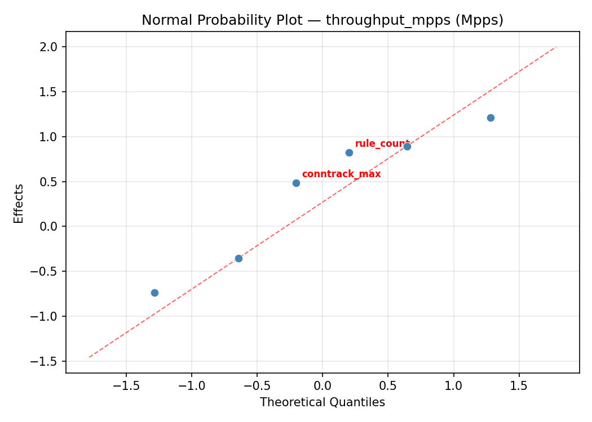
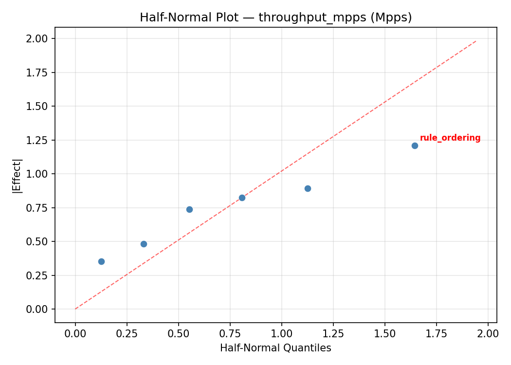
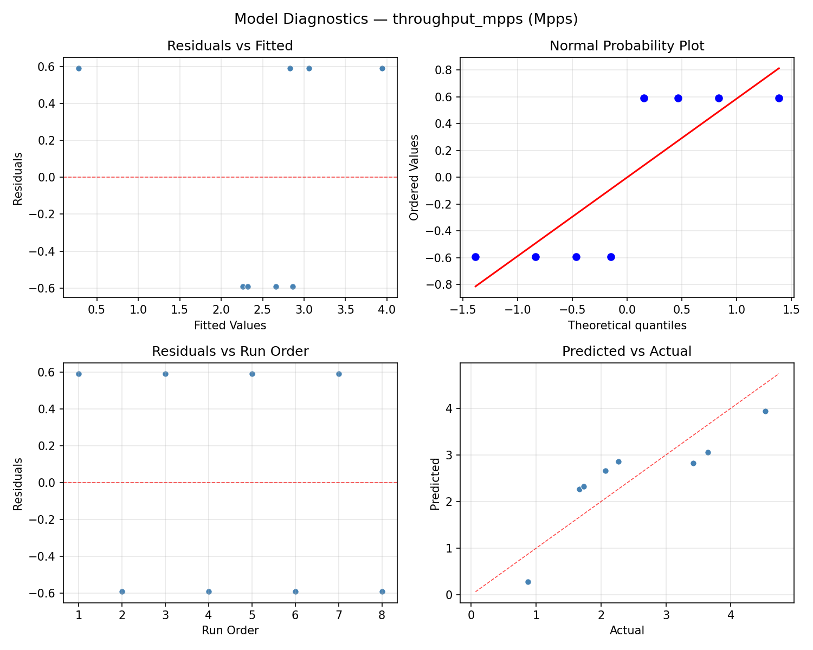
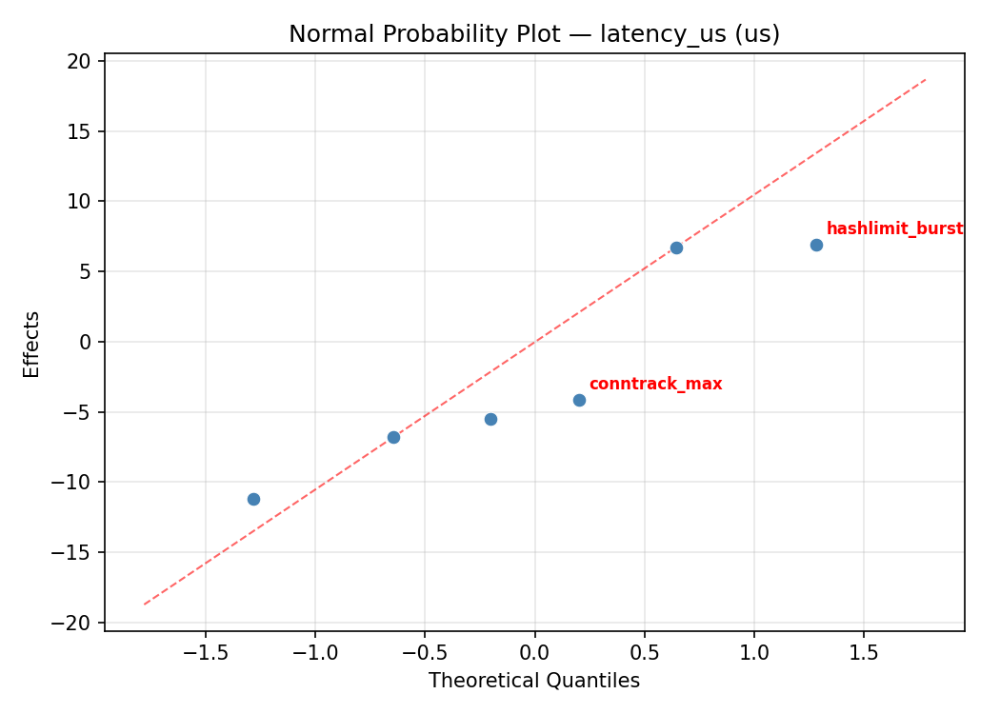
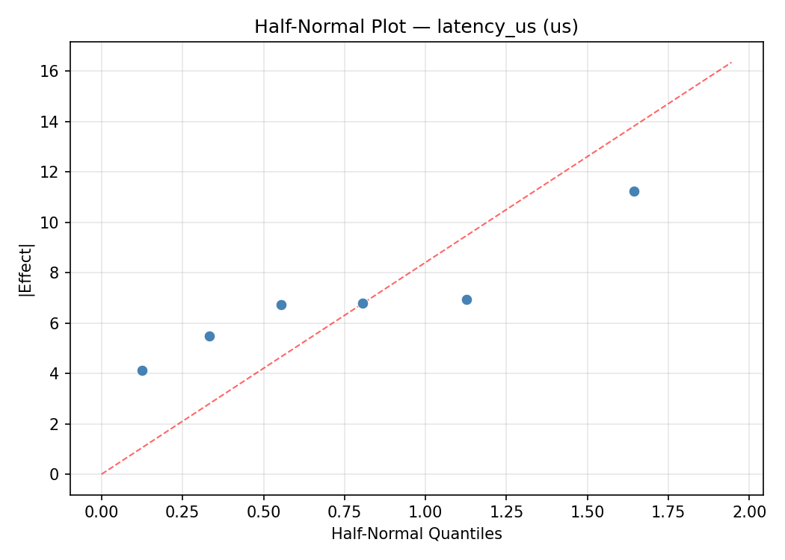
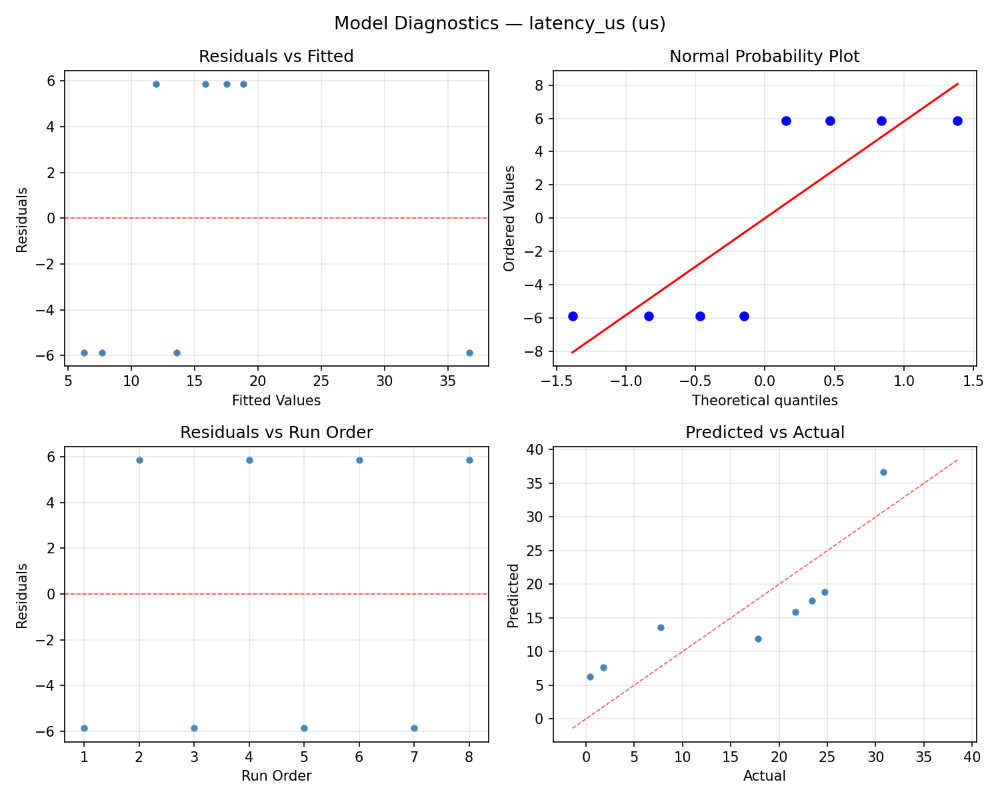

Summary
This experiment investigates firewall rule ordering. Plackett-Burman screening of 6 iptables/nftables parameters for packet processing throughput.
The design varies 6 factors: rule count (rules), ranging from 100 to 5000, conntrack max (entries), ranging from 65536 to 1048576, rule ordering, ranging from frequency to sequential, hashlimit burst (packets), ranging from 5 to 100, nf tables, ranging from iptables to nftables, and batch verdict, ranging from off to on. The goal is to optimize 2 responses: throughput mpps (Mpps) (maximize) and latency us (us) (minimize). Fixed conditions held constant across all runs include interface = eth0, protocol mix = 80_tcp_20_udp.
A Plackett-Burman screening design was used to efficiently test 6 factors in only 8 runs. This design assumes interactions are negligible and focuses on identifying the most influential main effects.
Key Findings
For throughput mpps, the most influential factors were rule ordering (34.0%), batch verdict (20.1%), rule count (19.8%). The best observed value was 4.53 (at rule count = 5000, conntrack max = 65536, rule ordering = frequency).
For latency us, the most influential factors were rule ordering (39.7%), batch verdict (25.0%), rule count (12.4%). The best observed value was 0.4 (at rule count = 5000, conntrack max = 65536, rule ordering = frequency).
Recommended Next Steps
- Follow up with a response surface design (CCD or Box-Behnken) on the top 3–4 factors to model curvature and find the true optimum.
- Consider whether any fixed factors should be varied in a future study.
- The screening results can guide factor reduction — drop factors contributing less than 5% and re-run with a smaller, more focused design.
Experimental Setup
Factors
| Factor | Low | High | Unit |
|---|
rule_count | 100 | 5000 | rules |
conntrack_max | 65536 | 1048576 | entries |
rule_ordering | frequency | sequential | |
hashlimit_burst | 5 | 100 | packets |
nf_tables | iptables | nftables | |
batch_verdict | off | on | |
Fixed: interface = eth0, protocol_mix = 80_tcp_20_udp
Responses
| Response | Direction | Unit |
|---|
throughput_mpps | ↑ maximize | Mpps |
latency_us | ↓ minimize | us |
Configuration
{
"metadata": {
"name": "Firewall Rule Ordering",
"description": "Plackett-Burman screening of 6 iptables/nftables parameters for packet processing throughput"
},
"factors": [
{
"name": "rule_count",
"levels": [
"100",
"5000"
],
"type": "continuous",
"unit": "rules"
},
{
"name": "conntrack_max",
"levels": [
"65536",
"1048576"
],
"type": "continuous",
"unit": "entries"
},
{
"name": "rule_ordering",
"levels": [
"frequency",
"sequential"
],
"type": "categorical",
"unit": ""
},
{
"name": "hashlimit_burst",
"levels": [
"5",
"100"
],
"type": "continuous",
"unit": "packets"
},
{
"name": "nf_tables",
"levels": [
"iptables",
"nftables"
],
"type": "categorical",
"unit": ""
},
{
"name": "batch_verdict",
"levels": [
"off",
"on"
],
"type": "categorical",
"unit": ""
}
],
"fixed_factors": {
"interface": "eth0",
"protocol_mix": "80_tcp_20_udp"
},
"responses": [
{
"name": "throughput_mpps",
"optimize": "maximize",
"unit": "Mpps"
},
{
"name": "latency_us",
"optimize": "minimize",
"unit": "us"
}
],
"settings": {
"operation": "plackett_burman",
"test_script": "use_cases/49_firewall_rule_ordering/sim.sh"
}
}
Experimental Matrix
The Plackett-Burman Design produces 8 runs. Each row is one experiment with specific factor settings.
| Run | rule_count | conntrack_max | rule_ordering | hashlimit_burst | nf_tables | batch_verdict |
|---|
| 1 | 5000 | 1048576 | sequential | 5 | iptables | off |
| 2 | 100 | 65536 | sequential | 100 | iptables | off |
| 3 | 100 | 1048576 | frequency | 100 | iptables | on |
| 4 | 5000 | 1048576 | sequential | 100 | nftables | on |
| 5 | 100 | 1048576 | frequency | 5 | nftables | off |
| 6 | 5000 | 65536 | frequency | 100 | nftables | off |
| 7 | 100 | 65536 | sequential | 5 | nftables | on |
| 8 | 5000 | 65536 | frequency | 5 | iptables | on |
Step-by-Step Workflow
1
Preview the design
$ python doe.py info --config use_cases/49_firewall_rule_ordering/config.json
2
Generate the runner script
$ python doe.py generate --config use_cases/49_firewall_rule_ordering/config.json \
--output use_cases/49_firewall_rule_ordering/results/run.sh --seed 42
3
Execute the experiments
$ bash use_cases/49_firewall_rule_ordering/results/run.sh
4
Analyze results
$ python doe.py analyze --config use_cases/49_firewall_rule_ordering/config.json
5
Get optimization recommendations
$ python doe.py optimize --config use_cases/49_firewall_rule_ordering/config.json
6
Multi-objective optimization
With 2 competing responses, use --multi to find the best compromise via Derringer–Suich desirability.
$ python doe.py optimize --config use_cases/49_firewall_rule_ordering/config.json --multi
7
Generate the HTML report
$ python doe.py report --config use_cases/49_firewall_rule_ordering/config.json \
--output use_cases/49_firewall_rule_ordering/results/report.html
Features Exercised
| Feature | Value |
|---|
| Design type | plackett_burman |
| Factor types | continuous (3), categorical (3) |
| Arg style | double-dash |
| Responses | 2 (throughput_mpps ↑, latency_us ↓) |
| Total runs | 8 |
Analysis Results
Generated from actual experiment runs using the DOE Helper Tool.
Response: throughput_mpps
Top factors: rule_ordering (34.0%), batch_verdict (20.1%), rule_count (19.8%).
ANOVA
| Source | DF | SS | MS | F | p-value |
|---|
| Source | DF | SS | MS | F | p-value |
| rule_count | 1 | 1.7020 | 1.7020 | 1.428 | 0.2711 |
| conntrack_max | 1 | 0.3081 | 0.3081 | 0.258 | 0.6268 |
| rule_ordering | 1 | 5.0086 | 5.0086 | 4.201 | 0.0796 |
| hashlimit_burst | 1 | 0.0946 | 0.0946 | 0.079 | 0.7863 |
| nf_tables | 1 | 0.7381 | 0.7381 | 0.619 | 0.4572 |
| batch_verdict | 1 | 1.7578 | 1.7578 | 1.474 | 0.2640 |
| rule_count*conntrack_max | 1 | 5.0086 | 5.0086 | 4.201 | 0.0796 |
| rule_count*rule_ordering | 1 | 0.3081 | 0.3081 | 0.258 | 0.6268 |
| rule_count*hashlimit_burst | 1 | 0.7381 | 0.7381 | 0.619 | 0.4572 |
| rule_count*nf_tables | 1 | 0.0946 | 0.0946 | 0.079 | 0.7863 |
| rule_count*batch_verdict | 1 | 0.8515 | 0.8515 | 0.714 | 0.4260 |
| conntrack_max*rule_ordering | 1 | 1.7020 | 1.7020 | 1.428 | 0.2711 |
| conntrack_max*hashlimit_burst | 1 | 1.7578 | 1.7578 | 1.474 | 0.2640 |
| conntrack_max*nf_tables | 1 | 0.8515 | 0.8515 | 0.714 | 0.4260 |
| conntrack_max*batch_verdict | 1 | 0.0946 | 0.0946 | 0.079 | 0.7863 |
| rule_ordering*hashlimit_burst | 1 | 0.8515 | 0.8515 | 0.714 | 0.4260 |
| rule_ordering*nf_tables | 1 | 1.7578 | 1.7578 | 1.474 | 0.2640 |
| rule_ordering*batch_verdict | 1 | 0.7381 | 0.7381 | 0.619 | 0.4572 |
| hashlimit_burst*nf_tables | 1 | 1.7020 | 1.7020 | 1.428 | 0.2711 |
| hashlimit_burst*batch_verdict | 1 | 0.3081 | 0.3081 | 0.258 | 0.6268 |
| nf_tables*batch_verdict | 1 | 5.0086 | 5.0086 | 4.201 | 0.0796 |
| Error | (Lenth | PSE) | 7 | 8.3455 | 1.1922 |
| Total | 7 | 10.4608 | 1.4944 | | |
Pareto Chart

Main Effects Plot

Normal Probability Plot of Effects

Half-Normal Plot of Effects

Model Diagnostics

Response: latency_us
Top factors: rule_ordering (39.7%), batch_verdict (25.0%), rule_count (12.4%).
ANOVA
| Source | DF | SS | MS | F | p-value |
|---|
| Source | DF | SS | MS | F | p-value |
| rule_count | 1 | 46.5612 | 46.5612 | 0.695 | 0.4319 |
| conntrack_max | 1 | 27.7512 | 27.7512 | 0.414 | 0.5403 |
| rule_ordering | 1 | 475.8613 | 475.8613 | 7.105 | 0.0322 |
| hashlimit_burst | 1 | 0.3613 | 0.3613 | 0.005 | 0.9435 |
| nf_tables | 1 | 44.6512 | 44.6512 | 0.667 | 0.4411 |
| batch_verdict | 1 | 189.1512 | 189.1512 | 2.824 | 0.1367 |
| rule_count*conntrack_max | 1 | 475.8612 | 475.8612 | 7.105 | 0.0322 |
| rule_count*rule_ordering | 1 | 27.7512 | 27.7512 | 0.414 | 0.5403 |
| rule_count*hashlimit_burst | 1 | 44.6513 | 44.6513 | 0.667 | 0.4411 |
| rule_count*nf_tables | 1 | 0.3613 | 0.3613 | 0.005 | 0.9435 |
| rule_count*batch_verdict | 1 | 114.7613 | 114.7613 | 1.713 | 0.2319 |
| conntrack_max*rule_ordering | 1 | 46.5612 | 46.5612 | 0.695 | 0.4319 |
| conntrack_max*hashlimit_burst | 1 | 189.1512 | 189.1512 | 2.824 | 0.1367 |
| conntrack_max*nf_tables | 1 | 114.7612 | 114.7612 | 1.713 | 0.2319 |
| conntrack_max*batch_verdict | 1 | 0.3613 | 0.3613 | 0.005 | 0.9435 |
| rule_ordering*hashlimit_burst | 1 | 114.7612 | 114.7612 | 1.713 | 0.2319 |
| rule_ordering*nf_tables | 1 | 189.1513 | 189.1513 | 2.824 | 0.1367 |
| rule_ordering*batch_verdict | 1 | 44.6513 | 44.6513 | 0.667 | 0.4411 |
| hashlimit_burst*nf_tables | 1 | 46.5613 | 46.5613 | 0.695 | 0.4319 |
| hashlimit_burst*batch_verdict | 1 | 27.7512 | 27.7512 | 0.414 | 0.5403 |
| nf_tables*batch_verdict | 1 | 475.8613 | 475.8613 | 7.105 | 0.0322 |
| Error | (Lenth | PSE) | 7 | 468.8381 | 66.9769 |
| Total | 7 | 899.0987 | 128.4427 | | |
Pareto Chart

Main Effects Plot

Normal Probability Plot of Effects

Half-Normal Plot of Effects

Model Diagnostics

Response Surface Plots
3D surfaces fitted with quadratic RSM. Red dots are observed data points.
latency us conntrack max vs hashlimit burst

latency us rule count vs conntrack max

latency us rule count vs hashlimit burst

throughput mpps conntrack max vs hashlimit burst

throughput mpps rule count vs conntrack max

throughput mpps rule count vs hashlimit burst

Multi-Objective Optimization
When responses compete, Derringer–Suich desirability finds the best compromise.
Each response is scaled to a 0–1 desirability, then combined via a weighted geometric mean.
Overall Desirability
D = 0.9956
Per-Response Desirability
| Response | Weight | Desirability | Predicted | Dir |
|---|
throughput_mpps |
1.5 |
|
4.68 0.9926 4.68 Mpps |
↑ |
latency_us |
1.0 |
|
-5.06 1.0000 -5.06 us |
↓ |
Recommended Settings
| Factor | Value |
|---|
rule_count | 4788 rules |
conntrack_max | 1.107e+05 entries |
rule_ordering | frequency |
hashlimit_burst | 92.27 packets |
nf_tables | nftables |
batch_verdict | on |
Source: from RSM model prediction
Trade-off Summary
Sacrifice = how much worse than single-objective best.
| Response | Predicted | Best Observed | Sacrifice |
|---|
latency_us | -5.06 | 0.40 | -5.46 |
Top 3 Runs by Desirability
| Run | D | Factor Settings |
|---|
| #3 | 0.8021 | rule_count=5000, conntrack_max=65536, rule_ordering=frequency, hashlimit_burst=100, nf_tables=nftables, batch_verdict=off |
| #7 | 0.7012 | rule_count=5000, conntrack_max=1048576, rule_ordering=sequential, hashlimit_burst=100, nf_tables=nftables, batch_verdict=on |
Model Quality
| Response | R² | Type |
|---|
latency_us | 0.8477 | linear |
Full Multi-Objective Output
============================================================
MULTI-OBJECTIVE OPTIMIZATION
Method: Derringer-Suich Desirability Function
============================================================
Overall desirability: D = 0.9956
Response Weight Desirability Predicted Direction
---------------------------------------------------------------------
throughput_mpps 1.5 0.9926 4.68 Mpps ↑
latency_us 1.0 1.0000 -5.06 us ↓
Recommended settings:
rule_count = 4788 rules
conntrack_max = 1.107e+05 entries
rule_ordering = frequency
hashlimit_burst = 92.27 packets
nf_tables = nftables
batch_verdict = on
(from RSM model prediction)
Trade-off summary:
throughput_mpps: 4.68 (best observed: 4.53, sacrifice: -0.15)
latency_us: -5.06 (best observed: 0.40, sacrifice: -5.46)
Model quality:
throughput_mpps: R² = 0.7718 (linear)
latency_us: R² = 0.8477 (linear)
Top 3 observed runs by overall desirability:
1. Run #5 (D=0.9545): rule_count=5000, conntrack_max=65536, rule_ordering=frequency, hashlimit_burst=5, nf_tables=iptables, batch_verdict=on
2. Run #3 (D=0.8021): rule_count=5000, conntrack_max=65536, rule_ordering=frequency, hashlimit_burst=100, nf_tables=nftables, batch_verdict=off
3. Run #7 (D=0.7012): rule_count=5000, conntrack_max=1048576, rule_ordering=sequential, hashlimit_burst=100, nf_tables=nftables, batch_verdict=on
Full Analysis Output
=== Main Effects: throughput_mpps ===
Factor Effect Std Error % Contribution
--------------------------------------------------------------
rule_ordering 1.5825 0.4322 34.0%
batch_verdict 0.9375 0.4322 20.1%
rule_count 0.9225 0.4322 19.8%
nf_tables 0.6075 0.4322 13.0%
conntrack_max -0.3925 0.4322 8.4%
hashlimit_burst -0.2175 0.4322 4.7%
=== ANOVA Table: throughput_mpps ===
Source DF SS MS F p-value
-----------------------------------------------------------------------------
rule_count 1 1.7020 1.7020 1.428 0.2711
conntrack_max 1 0.3081 0.3081 0.258 0.6268
rule_ordering 1 5.0086 5.0086 4.201 0.0796
hashlimit_burst 1 0.0946 0.0946 0.079 0.7863
nf_tables 1 0.7381 0.7381 0.619 0.4572
batch_verdict 1 1.7578 1.7578 1.474 0.2640
rule_count*conntrack_max 1 5.0086 5.0086 4.201 0.0796
rule_count*rule_ordering 1 0.3081 0.3081 0.258 0.6268
rule_count*hashlimit_burst 1 0.7381 0.7381 0.619 0.4572
rule_count*nf_tables 1 0.0946 0.0946 0.079 0.7863
rule_count*batch_verdict 1 0.8515 0.8515 0.714 0.4260
conntrack_max*rule_ordering 1 1.7020 1.7020 1.428 0.2711
conntrack_max*hashlimit_burst 1 1.7578 1.7578 1.474 0.2640
conntrack_max*nf_tables 1 0.8515 0.8515 0.714 0.4260
conntrack_max*batch_verdict 1 0.0946 0.0946 0.079 0.7863
rule_ordering*hashlimit_burst 1 0.8515 0.8515 0.714 0.4260
rule_ordering*nf_tables 1 1.7578 1.7578 1.474 0.2640
rule_ordering*batch_verdict 1 0.7381 0.7381 0.619 0.4572
hashlimit_burst*nf_tables 1 1.7020 1.7020 1.428 0.2711
hashlimit_burst*batch_verdict 1 0.3081 0.3081 0.258 0.6268
nf_tables*batch_verdict 1 5.0086 5.0086 4.201 0.0796
Error (Lenth PSE) 7 8.3455 1.1922
Total 7 10.4608 1.4944
Note: Error estimated using Lenth's pseudo-standard-error (unreplicated design)
=== Interaction Effects: throughput_mpps ===
Factor A Factor B Interaction % Contribution
------------------------------------------------------------------------
rule_count conntrack_max -1.5825 14.0%
nf_tables batch_verdict 1.5825 14.0%
conntrack_max hashlimit_burst 0.9375 8.3%
rule_ordering nf_tables 0.9375 8.3%
conntrack_max rule_ordering -0.9225 8.2%
hashlimit_burst nf_tables -0.9225 8.2%
rule_count batch_verdict -0.6525 5.8%
conntrack_max nf_tables 0.6525 5.8%
rule_ordering hashlimit_burst 0.6525 5.8%
rule_count hashlimit_burst -0.6075 5.4%
rule_ordering batch_verdict 0.6075 5.4%
rule_count rule_ordering 0.3925 3.5%
hashlimit_burst batch_verdict -0.3925 3.5%
rule_count nf_tables 0.2175 1.9%
conntrack_max batch_verdict -0.2175 1.9%
=== Summary Statistics: throughput_mpps ===
rule_count:
Level N Mean Std Min Max
------------------------------------------------------------
100 4 2.0650 1.1685 0.8700 3.6500
5000 4 2.9875 1.2467 1.7300 4.5300
conntrack_max:
Level N Mean Std Min Max
------------------------------------------------------------
1048576 4 2.7225 1.5928 0.8700 4.5300
65536 4 2.3300 0.9204 1.6700 3.6500
rule_ordering:
Level N Mean Std Min Max
------------------------------------------------------------
frequency 4 1.7350 0.6183 0.8700 2.2700
sequential 4 3.3175 1.1980 1.6700 4.5300
hashlimit_burst:
Level N Mean Std Min Max
------------------------------------------------------------
100 4 2.6350 1.2877 1.6700 4.5300
5 4 2.4175 1.3406 0.8700 3.6500
nf_tables:
Level N Mean Std Min Max
------------------------------------------------------------
iptables 4 2.2225 0.8175 1.6700 3.4200
nftables 4 2.8300 1.6039 0.8700 4.5300
batch_verdict:
Level N Mean Std Min Max
------------------------------------------------------------
off 4 2.0575 1.0742 0.8700 3.4200
on 4 2.9950 1.3218 1.7300 4.5300
=== Main Effects: latency_us ===
Factor Effect Std Error % Contribution
--------------------------------------------------------------
rule_ordering -15.4250 4.0069 39.7%
batch_verdict -9.7250 4.0069 25.0%
rule_count -4.8250 4.0069 12.4%
nf_tables -4.7250 4.0069 12.2%
conntrack_max 3.7250 4.0069 9.6%
hashlimit_burst 0.4250 4.0069 1.1%
=== ANOVA Table: latency_us ===
Source DF SS MS F p-value
-----------------------------------------------------------------------------
rule_count 1 46.5612 46.5612 0.695 0.4319
conntrack_max 1 27.7512 27.7512 0.414 0.5403
rule_ordering 1 475.8613 475.8613 7.105 0.0322
hashlimit_burst 1 0.3613 0.3613 0.005 0.9435
nf_tables 1 44.6512 44.6512 0.667 0.4411
batch_verdict 1 189.1512 189.1512 2.824 0.1367
rule_count*conntrack_max 1 475.8612 475.8612 7.105 0.0322
rule_count*rule_ordering 1 27.7512 27.7512 0.414 0.5403
rule_count*hashlimit_burst 1 44.6513 44.6513 0.667 0.4411
rule_count*nf_tables 1 0.3613 0.3613 0.005 0.9435
rule_count*batch_verdict 1 114.7613 114.7613 1.713 0.2319
conntrack_max*rule_ordering 1 46.5612 46.5612 0.695 0.4319
conntrack_max*hashlimit_burst 1 189.1512 189.1512 2.824 0.1367
conntrack_max*nf_tables 1 114.7612 114.7612 1.713 0.2319
conntrack_max*batch_verdict 1 0.3613 0.3613 0.005 0.9435
rule_ordering*hashlimit_burst 1 114.7612 114.7612 1.713 0.2319
rule_ordering*nf_tables 1 189.1513 189.1513 2.824 0.1367
rule_ordering*batch_verdict 1 44.6513 44.6513 0.667 0.4411
hashlimit_burst*nf_tables 1 46.5613 46.5613 0.695 0.4319
hashlimit_burst*batch_verdict 1 27.7512 27.7512 0.414 0.5403
nf_tables*batch_verdict 1 475.8613 475.8613 7.105 0.0322
Error (Lenth PSE) 7 468.8381 66.9769
Total 7 899.0987 128.4427
Note: Error estimated using Lenth's pseudo-standard-error (unreplicated design)
=== Interaction Effects: latency_us ===
Factor A Factor B Interaction % Contribution
------------------------------------------------------------------------
rule_count conntrack_max 15.4250 15.4%
nf_tables batch_verdict -15.4250 15.4%
conntrack_max hashlimit_burst -9.7250 9.7%
rule_ordering nf_tables -9.7250 9.7%
rule_count batch_verdict 7.5750 7.5%
conntrack_max nf_tables -7.5750 7.5%
rule_ordering hashlimit_burst -7.5750 7.5%
conntrack_max rule_ordering 4.8250 4.8%
hashlimit_burst nf_tables 4.8250 4.8%
rule_count hashlimit_burst 4.7250 4.7%
rule_ordering batch_verdict -4.7250 4.7%
rule_count rule_ordering -3.7250 3.7%
hashlimit_burst batch_verdict 3.7250 3.7%
rule_count nf_tables -0.4250 0.4%
conntrack_max batch_verdict 0.4250 0.4%
=== Summary Statistics: latency_us ===
rule_count:
Level N Mean Std Min Max
------------------------------------------------------------
100 4 18.4500 12.3108 1.8000 30.8000
5000 4 13.6250 11.5162 0.4000 24.7000
conntrack_max:
Level N Mean Std Min Max
------------------------------------------------------------
1048576 4 14.1750 13.1809 0.4000 30.8000
65536 4 17.9000 10.8034 1.8000 24.7000
rule_ordering:
Level N Mean Std Min Max
------------------------------------------------------------
frequency 4 23.7500 5.4836 17.8000 30.8000
sequential 4 8.3250 10.5361 0.4000 23.4000
hashlimit_burst:
Level N Mean Std Min Max
------------------------------------------------------------
100 4 15.8250 10.5472 0.4000 23.4000
5 4 16.2500 13.7236 1.8000 30.8000
nf_tables:
Level N Mean Std Min Max
------------------------------------------------------------
iptables 4 18.4000 7.7361 7.7000 24.7000
nftables 4 13.6750 14.9990 0.4000 30.8000
batch_verdict:
Level N Mean Std Min Max
------------------------------------------------------------
off 4 20.9000 9.6461 7.7000 30.8000
on 4 11.1750 11.9834 0.4000 24.7000
Optimization Recommendations
=== Optimization: throughput_mpps ===
Direction: maximize
Best observed run: #5
rule_count = 5000
conntrack_max = 65536
rule_ordering = frequency
hashlimit_burst = 100
nf_tables = nftables
batch_verdict = off
Value: 4.53
RSM Model (linear, R² = 0.5029, Adj R² = -2.4799):
Coefficients:
intercept +2.5263
rule_count -0.0263
conntrack_max -0.6037
rule_ordering -0.1962
hashlimit_burst +0.4463
nf_tables +0.1538
batch_verdict +0.1762
Predicted optimum (from linear model, at observed points):
rule_count = 5000
conntrack_max = 65536
rule_ordering = frequency
hashlimit_burst = 100
nf_tables = nftables
batch_verdict = off
Predicted value: 3.7238
Surface optimum (via L-BFGS-B, linear model):
rule_count = 100
conntrack_max = 65536
rule_ordering = frequency
hashlimit_burst = 100
nf_tables = nftables
batch_verdict = on
Predicted value: 4.1288
Model quality: Moderate fit — use predictions directionally, not precisely.
Factor importance:
1. conntrack_max (effect: 1.2, contribution: 37.7%)
2. hashlimit_burst (effect: -0.9, contribution: 27.8%)
3. rule_ordering (effect: -0.4, contribution: 12.2%)
4. batch_verdict (effect: 0.4, contribution: 11.0%)
5. nf_tables (effect: 0.3, contribution: 9.6%)
6. rule_count (effect: -0.1, contribution: 1.6%)
=== Optimization: latency_us ===
Direction: minimize
Best observed run: #5
rule_count = 5000
conntrack_max = 65536
rule_ordering = frequency
hashlimit_burst = 100
nf_tables = nftables
batch_verdict = off
Value: 0.4
RSM Model (linear, R² = 0.5144, Adj R² = -2.3992):
Coefficients:
intercept +16.0375
rule_count +0.5375
conntrack_max +5.6125
rule_ordering +1.8625
hashlimit_burst -2.7375
nf_tables -1.9375
batch_verdict -3.3625
Predicted optimum (from linear model, at observed points):
rule_count = 5000
conntrack_max = 1048576
rule_ordering = sequential
hashlimit_burst = 5
nf_tables = iptables
batch_verdict = off
Predicted value: 32.0875
Surface optimum (via L-BFGS-B, linear model):
rule_count = 100
conntrack_max = 65536
rule_ordering = frequency
hashlimit_burst = 100
nf_tables = nftables
batch_verdict = on
Predicted value: -0.0125
Model quality: Moderate fit — use predictions directionally, not precisely.
Factor importance:
1. conntrack_max (effect: -11.2, contribution: 35.0%)
2. batch_verdict (effect: -6.7, contribution: 21.0%)
3. hashlimit_burst (effect: 5.5, contribution: 17.1%)
4. nf_tables (effect: -3.9, contribution: 12.1%)
5. rule_ordering (effect: 3.7, contribution: 11.6%)
6. rule_count (effect: 1.1, contribution: 3.3%)